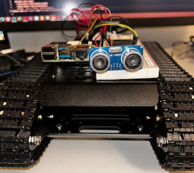
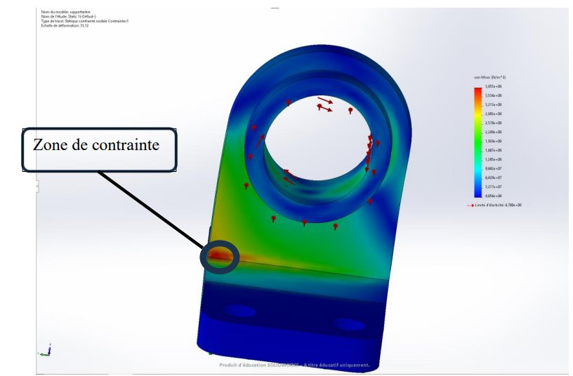
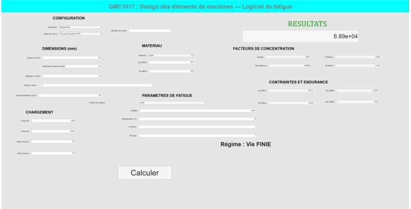
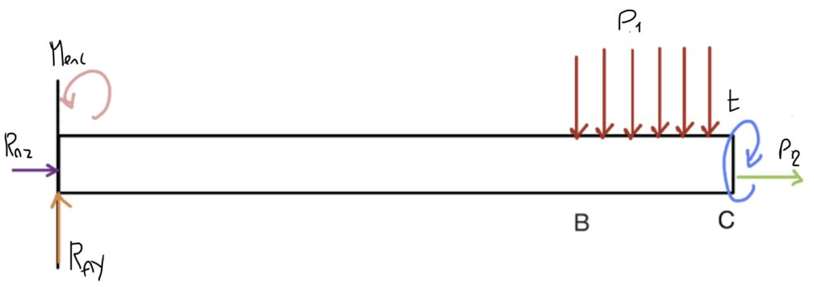
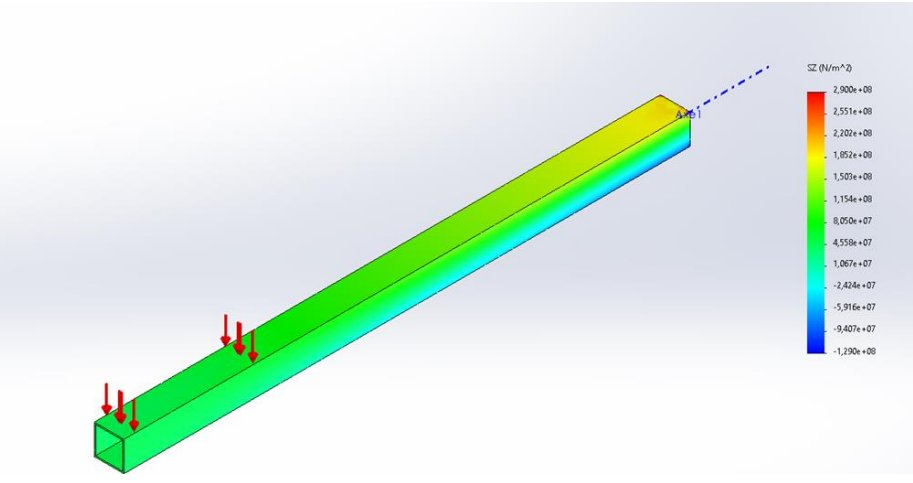
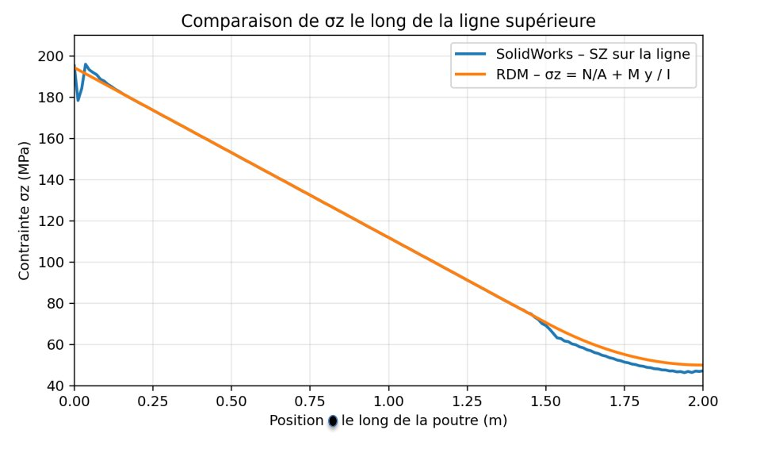
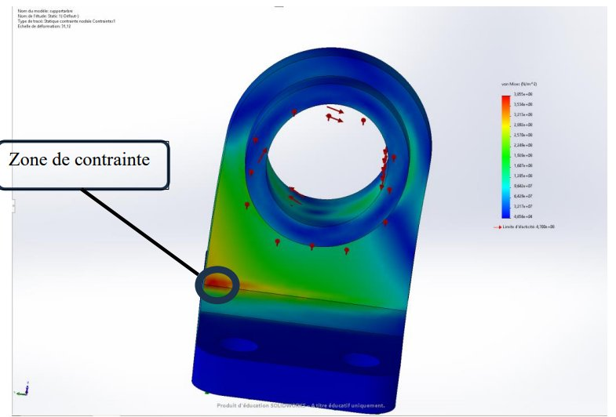
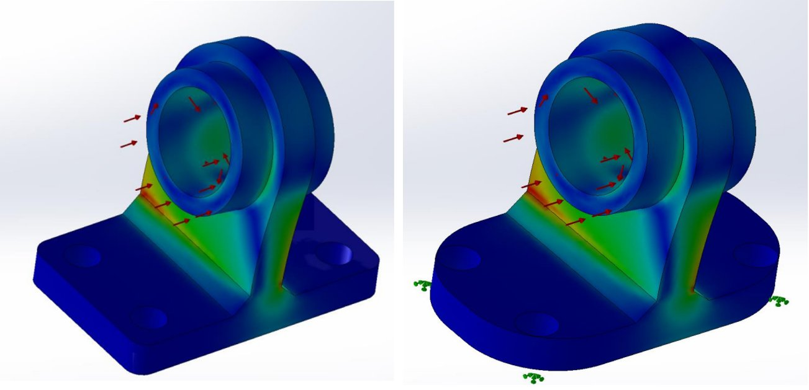
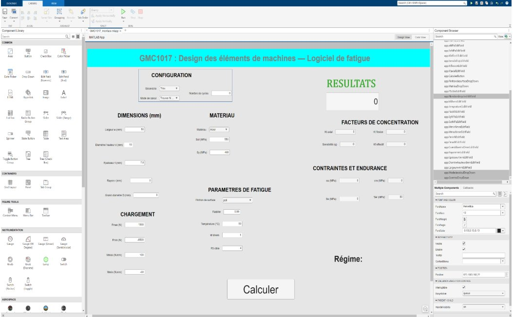

Je m'intéresse aux systèmes qui fonctionnent — et à ceux qui pourraient mieux fonctionner. Je conçois, analyse et construis à l'intersection de la mécanique, de l'électronique et du code, avec l'idée que la technologie n'a de valeur que si elle change quelque chose de réel.
Je suis Saida Fatimatou Zahraa Diouf, étudiante en génie mécatronique avec un parcours en gestion de projets. J'ai plusieurs passions — la robotique, l'analyse structurale, les systèmes embarqués — et ce qui les relie, c'est l'envie de découvrir comment les choses fonctionnent, puis de proposer des solutions qui auront un réel impact.
Je parle français, anglais, wolof et seereer.
Une collection de travaux techniques documentés, études de cas et expériences.

Système multi-MCU à chenilles. Hardware assemblé, architecture multi-couche définie, code en cours.

Validation analytique et numérique de deux structures mécaniques. Optimisation géométrique : −4.8% de contrainte.

Outil MATLAB App Designer calculant le facteur de sécurité et la durée de vie de plaques entaillées sous chargement combiné. Goodman + courbe S-N.
En préparation.
Concevoir une pièce mécanique ne suffit pas — il faut prouver qu'elle résiste sous charge. L'objectif de ce projet : analyser deux structures soumises à des charges combinées, valider les calculs analytiques par simulation numérique, puis améliorer le design pour réduire les zones critiques.
Un tube carré creux en acier (L = 2 m, 105 × 105 mm, paroi 5 mm) soumis à trois chargements simultanés : pression verticale distribuée sur la dernière demi-longueur, compression axiale de 50 MPa, couple de torsion de 500 N·m. J'ai calculé l'ensemble analytiquement, puis reproduit le modèle dans SolidWorks pour comparer point par point.



Superposition contrainte axiale + flexion, cisaillement de torsion, flèche par forces virtuelles.
Modèle 3D, maillage éléments finis, sondage nodal sur la ligne de séparation supérieure.
| Position | Calcul (MPa) | FEA (MPa) | Écart |
|---|---|---|---|
| z = 0 (encastrement) | 194.3 | 195.0 | +0.3% |
| z = 0.50 m | 153.1 | 153.0 | <0.1% |
| z = 1.00 m | 111.9 | 112.0 | <0.1% |
| z = 1.50 m | 70.6 | 69.2 | −2.0% |
| z = 2.00 m (bout libre) | 50.0 | 47.2 | −5.6% |
Principe de Saint-Venant confirmé. Les écarts dépassent 2% uniquement aux zones de conditions aux limites. Sur toute la partie centrale, les deux courbes coïncident presque parfaitement — exactement ce que prédit la théorie.
Flèche analytique : 17.96 mm · FEA : 18.17 mm · écart : 1.2%
Analytical deflection: 17.96 mm · FEA: 18.17 mm · deviation: 1.2%
La carte Von Mises identifie immédiatement la zone critique : la jonction entre le col cylindrique et la semelle. Ce changement brusque de section géométrique concentre les contraintes au nœud 51473 (σzz = −407.6 MPa), qui se trouve dans un état de compression triaxiale.


La pièce reste dans le domaine élastique sous les trois critères. Aucune rupture prévue dans les conditions de chargement imposées.
Pour réduire la concentration de contraintes à la jonction col-semelle, j'ai mené une étude paramétrique sur le rayon du congé de raccordement, de 12.7 mm à 55.7 mm (limite géométrique), en relançant la simulation à chaque valeur.
47 mm bat 55.7 mm — la limite maximale. Au-delà, le congé interfère avec la géométrie adjacente et redistribue les contraintes. L'optimum se trouve par analyse, pas par intuition.
Ce projet a rendu concrètes des formules apprises en cours. Calculer σz = N/A + Mc/I sur papier, puis voir exactement cette courbe apparaître dans SolidWorks avec moins de 2% d'écart — c'est le moment où la mécanique cesse d'être abstraite. Les équations décrivent vraiment ce qui se passe à l'intérieur de la matière.
L'étude paramétrique du congé m'a appris que l'ingénierie ne suit pas l'intuition : plus grand ne signifie pas toujours meilleur. Il faut analyser, itérer, comparer — et savoir lire ce que les données disent vraiment.
Vérifier une pièce en fatigue demande d'enchaîner concentration de contraintes, sensibilité à l'entaille, correction de la limite d'endurance, critère de Goodman et courbe S-N — à la main, et à recommencer à chaque itération de design. L'objectif : un logiciel qui automatise toute la chaîne et reste utilisable sans aucune connaissance en programmation, pour tester rapidement différentes alternatives et trouver la configuration la plus viable.
Le logiciel répond aux deux questions que se pose un concepteur face à une pièce sollicitée de façon cyclique. À partir des mêmes données de géométrie, de chargement et de matériau, l'utilisateur choisit le sens du calcul :
L'utilisateur fixe un facteur de sécurité cible et le logiciel calcule le nombre de cycles correspondant.
L'utilisateur fixe une durée de vie visée et le logiciel calcule le facteur de sécurité obtenu.
Chaque calcul suit la même progression rigoureuse, de la géométrie de la section jusqu'au résultat final. Toutes les formules proviennent du manuel Éléments de machines (Drouin et al.) et des notions vues en cours.
Section nette A, inertie I, distance c et rayon local d'entaille, calculés selon le cas (trou, encoche, épaulement).
Contrainte axiale F/A et de flexion Mc/I, évaluées en valeurs max et min du chargement.
Kt lu sur les abaques C1–C6, sensibilité q, puis Kf — le plus défavorable entre axial et flexion est retenu.
La limite d'endurance de base Se′ est corrigée par six facteurs : surface, dimension, fiabilité, température, fatigue et effets divers.
Le critère de Goodman relie contraintes moyenne et alternée ; la vie finie passe par une courbe S-N de type Basquin.
FS ou N selon le mode choisi, avec l'indication du régime : vie finie ou vie infinie.
Une plaque en acier trouée (w = 50, d = 10, t = 7,8 mm), chargée en combiné axial + flexion non complètement renversé (Fmax = 1500 N, Fmin = −6500 N ; Mmax = 100, Mmin = −50 N·mm), acier Sut = 550 / Sy = 460 MPa, surface usinée, fiabilité 0,99, 50 °C, pour un facteur de sécurité imposé de 4. Le logiciel renvoie :
| Grandeur | Valeur |
|---|---|
| Kt axial / flexion | 2,50 / 1,84 |
| Sensibilité q | 0,86 |
| Kf effectif | 2,30 |
| Se′ / Se (corrigée) | 275 / 63,6 MPa |
| σa / σm | 48,9 / 2,03 MPa |
| Durée de vie N | ≈ 21 700 cycles · vie finie |
N restant sous le seuil de 10⁶ cycles, la pièce est en régime de vie finie : pour une durée de vie plus longue, il faut modifier dimensions, matériau ou chargement — et le logiciel permet de le retester en quelques secondes.
L'interface se divise en deux zones : à gauche, toutes les entrées (configuration, dimensions, chargement, matériau, paramètres de fatigue) ; à droite, le résultat principal en grand, accompagné de tous les résultats intermédiaires (Kt, q, Kf, σa, σm, Se′, Se). Les champs apparaissent et disparaissent selon la géométrie et le mode choisis — par exemple le rayon r n'apparaît que pour l'encoche et l'épaulement — ce qui réduit les risques d'erreur de saisie.

Plutôt qu'un seul gros script, le moteur de calcul est découpé en une vingtaine de fonctions isolées et testables : section_props, nominal_stress, getKt_C1 à getKt_C6, get_q, get_Kf, get_ka à get_kd, calc_Se, build_SN_params, et enfin calc_FS_from_N / calc_N_from_FS. Le tout est orchestré par run_case.m, qui relie l'interface au calcul.
Les abaques de concentration de contraintes ont été numérisés à partir des figures du manuel, ce qui permet au logiciel de lire un Kt continu pour n'importe quel ratio géométrique au lieu de se limiter à des valeurs tabulées.
Chaque cas a d'abord été exécuté directement via un script de test pour obtenir des valeurs de référence, puis rejoué dans l'interface graphique pour comparer. Les trois géométries et les deux modes ont été couverts.
Les valeurs affichées par l'interface sont identiques à celles du moteur de calcul, et les champs conditionnels apparaissent correctement selon les sélections — confirmant la fiabilité de l'outil.
Construire cet outil m'a appris à transformer une méthode de calcul manuelle en logiciel fiable : découper le problème en fonctions isolées et testables, numériser des abaques, et valider chaque résultat contre une référence avant de faire confiance à l'interface. J'ai aussi vu la valeur d'une interface qui adapte ses champs au contexte — moins d'options visibles, moins d'erreurs de saisie.
Concevoir et construire un robot à chenilles capable de naviguer dans un environnement, de localiser une balle par vision, de la saisir avec un bras 5-DOF, et de la déposer à un point cible. Le système intègre trois MCU coordonnés, un mode téléopéré Xbox, et une architecture logicielle basée sur ROS2.
Le châssis, les moteurs, les trois cartes électroniques et le câblage sont en place. L'architecture physique a été validée.
Bluetooth Xbox · Dashboard TFT 1.14" · Transmission UART vers RPi
ROS2 · OpenCV · Coordination I2C (Hiwonder) + UART (STM32)
Driver I2C · Moteurs DC + encodeurs · Châssis aluminium à chenilles
Contrôle 5-DOF · Servomoteurs · Cinématique inverse (Phase 7)
| Composant | Rôle |
|---|---|
| Raspberry Pi 4B 4 GB | Cerveau central · ROS2 · Vision · Coordination |
| ESP32 TTGO T-Display V1.1 | Xbox Bluetooth · Dashboard TFT 1.14" |
| STM32 | Contrôle bras 5-DOF · Servomoteurs |
| Hiwonder Chassis + Encoder V1.4 | Châssis alu · Moteurs DC encodeurs · Driver I2C |
| HC-SR04 | Détection obstacles · Diviseur de tension sur ECHO |
| LiPo Zeee 7.4V 2200 mAh | Alimentation moteurs |
| Manette Xbox | Téléopération Bluetooth |
Techniques, outils et méthodes